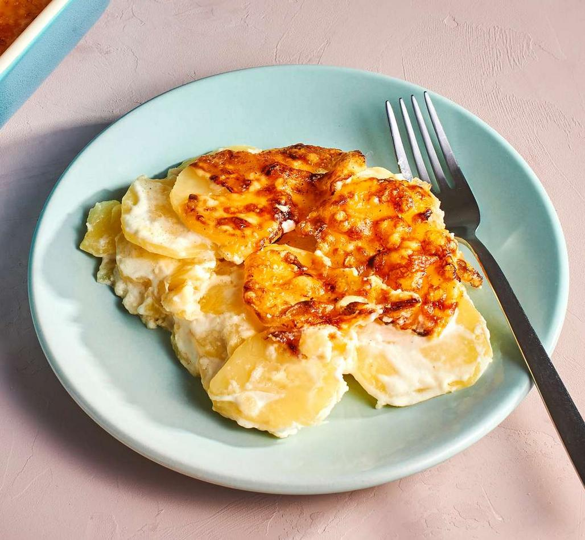

Gratin Dauphinois

Description
Potatoes baked in a creamy way, often eaten alone or with red meat.
Ingredients
- 375 ml cream , full fat
- 2 garlic cloves , minced
- 30g / 2 tbsp unsalted butter , melted
- 1.25 kg starchy potatoes
- 1 tsp salt
- 0.25 tsp pepper
- 250 g gruyere cheese (colby, cheddar, havarti or tasty), freshly grated yourself
- 2 tsp thyme leaves , fresh
Steps
- Cream Mixture: Place butter, cream and garlic in a jug. Mix until combined.
- Preheat oven to 180°C/350°F (both fan and standard ovens).
- Slice potatoes: Peel the potatoes and slice them 1/8"/3 mm thick. Or use a slicer!
- Layer 1: Spread 1/3 of the potatoes in a baking dish, then pour over 1/3 of the Cream Mixture, scatter with 1/3 of the salt, pepper and thyme. Sprinkle with 3/4 cups cheese.
- Layers 2 & 3: Repeat for the 2nd and third layer, but do not finish with cheese on the top layer (will add later).
- Cover & bake: Cover with lid or foil, and bake for 1 hour 15 minutes or until the potatoes in the middle are soft (use knife to test), it might take 1 1/2 hours.
- Top with cheese, bake again: Remove foil, top with cheese. Bake for a further 10 to 15 minutes until golden and bubbly. Stand 5 minutes before serving.